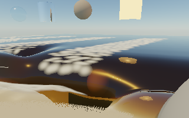
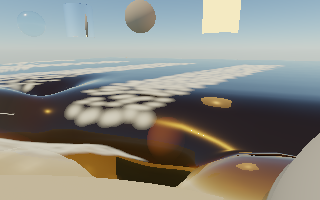
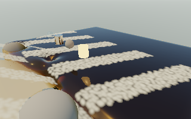

November 13, 2026 · AMD Radeon Pro 560X · Deno 2.9.8 / native wgpu / Metal
No repeatable full-scene speedup. None of these trials is enabled in the live app. The current experience, controls, simulation and historical tests remain unchanged. The terrain trial also fails the grazing-view image gate. No GPU device or graphics-context loss occurred in these checks.
These test reusable representations inspired by the forest-engine research. They do not implement its CLOD, voxel geometry, far proxies, mesh shaders or GI. The foam trials still draw the same number of Gaussian instances; they are not active-list compaction.
640 × 400 native window, 320 × 200 scene image, resolution 1.4, 3,024 initial water markers, CPU/WebAssembly physics and GPU rendering. Wind 12 m/s, organic load 1.2, 144 sand grab/place edits, seeded sea foam. Most edited material consolidates into the bed; eight parcels remain. This is not an unlimited raised-sculpture or large-world stress test.
Each run uses the ordinary 60-FPS-capped application loop for 96 frames, discards the first 16, and measures FPS and simulated/wall time over 79 completed intervals. Startup and screenshot readback are excluded. Runs are sequential in the order shown; no simultaneous graphics benchmarks. No physics or image-quality settings were lowered between modes.
| Run / raw evidence | FPS | Simulation | P95 interval | Interval std. dev. |
|---|---|---|---|---|
| reference-a | 5.73 | 0.764× | 197.7 ms | 11.3 ms |
| terrain-a | 5.69 | 0.759× | 203.5 ms | 13.2 ms |
| foam-a | 5.69 | 0.758× | 200.7 ms | 11.9 ms |
| both-a | 5.72 | 0.763× | 200.3 ms | 13.8 ms |
| both-b | 5.46 | 0.728× | 219.5 ms | 18.9 ms |
| lighting-a | 5.63 | 0.751× | 203.4 ms | 12.1 ms |
| reference-b | 6.08 | 0.811× | 188.2 ms | 12.6 ms |
The reference itself varies from 5.73 to 6.08 FPS and 0.764× to 0.811× realtime. Trials lie between 5.46–5.72 FPS and 0.728–0.763×. Neither average throughput nor frame variance improved reliably. More sampling could narrow uncertainty; these results do not justify promoting a default. Native per-pass GPU timestamps are unavailable on this runtime/adapter, so this report does not claim isolated GPU shader timings.
The polynomial cache matches the reference CPU heights and derivatives at 2,000 varied coordinates, including clamped boundaries. Actual GPU coefficients differ from double-precision CPU coefficients by at most 2.69e-7. A 5,000-edit journal test retains fixed storage and correctly restores the original heights. A local edit rebuilds four tiles; wetness-only and camera changes rebuild none.
Mathematical equivalence is not pixel equivalence: floating-point changes affect bounded grazing-ray hits. The terrain trial reaches mean absolute linear RGB error 0.003026 in one low shoreline view, exceeding the predeclared 0.002 gate. 2,136 of 192,000 RGB components change by more than 0.01. Repeating the reference produces zero error. This failed gate is retained, not hidden by increasing tolerance.


Foam-only geometry and lighting reuse passes: ten frozen views include objects, carved sand, four camera angles, underwater and night. Worst mean absolute linear RGB error is 8.13e-7; one view changes three RGB components (one pixel) by more than 0.01, with a maximum of 0.0253. No nonfinite values. Reference repeat error is zero. These are discrete angle checks, not a long camera-motion recording.

Rejected terrain image gate and numerical results · Passing foam-only image checks · Initial geometry-only checks
Focused numerical/unit checks · Web build · Native build. All compilation and frame safeguards remain. The image-check process deliberately exits unsuccessfully for the rejected terrain variant; this is a visual-test failure, not a driver crash. An early benchmark setup typo also stopped cleanly before measured playback and was corrected; no failed run enters the table.
The next representation experiment should reduce the number of samples or primitives, not only cache algebra while retaining all the queries. Priorities and acceptance gates are recorded in DEVELOPMENT_BACKLOG.md:
Dynamic hierarchy maintenance, large beach extents, long edit sessions, water-resident feature coupling and Windows/RTX measurements remain untested here. Native mesh shaders are not assumed available in the current Deno host. The existing full CPU water mirror and native completion overhead remain separate high-priority structural costs.
npm run build:native node --test tests/representation-cache.test.js .native/tools/deno run --config native/deno.json --allow-read --allow-write=.native --allow-env --allow-sys --allow-ffi native/representation-check.js lighting foam-only .native/tools/deno run --config native/deno.json --allow-read --allow-write=.native --allow-env --allow-sys --allow-ffi native/representation-bench.js reference busy trial
Replace reference with terrain, foam, both or lighting; run serially. Omitting foam-only from the image check tests the rejected terrain variant. On Windows, use deno.exe. Machine-readable summary. This report starts no graphics work.